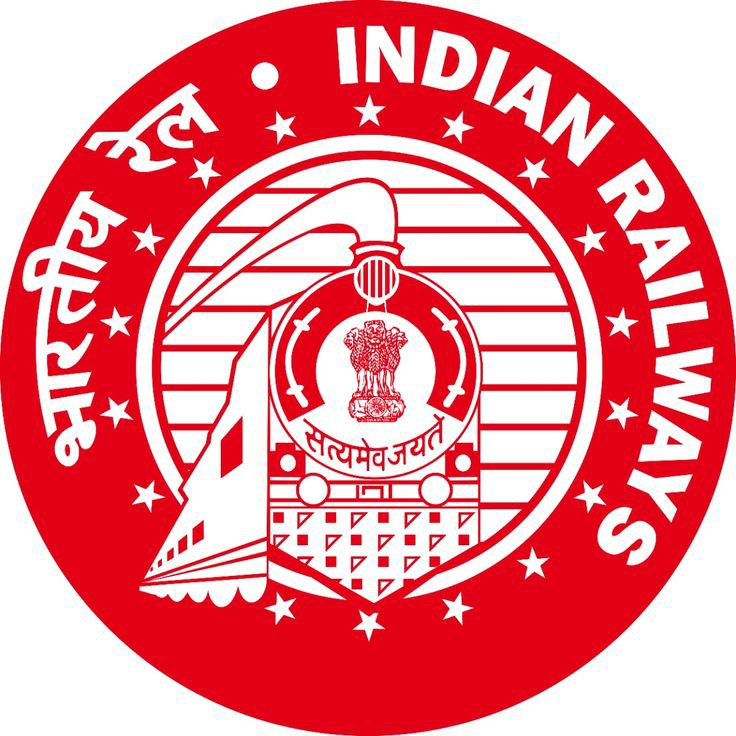

| s.no |
job role |
img |
qualification |
age limit |
start application date |
last_Date |
vacancy |
| 1001 |
police |
|
10th Pass |
18 to 27 |
1/1/2025 |
1/2/2025 |
1.constabls
“200 vacancies available across different districts. Both male and female candidates are eligible to apply under the General, OBC, SC, and ST categories.”
Sub-Inspector
50 posts open for recruitment in crime branch, traffic police, and law & order divisions. Priority will be given to graduates with prior NCC or sports achievements.”
Driver
“30 vacancies available for heavy and light vehicle drivers. Candidates must hold a valid driving license with at least 2 years of experience.”
click here |
| 1002 |
mega DSA |
|
B.Ed |
21 to 28 |
2/1/2027 |
2/1/2028 |
DSA (Direct Sales Agent)
40 positions for field sales and customer acquisition. Preference will be given to candidates with prior experience in banking or finance sales.” |
| 1003 |
hdfc bank |
|
any degree |
21 to 32 |
4/1/2025 |
2/1/2026 |
HDFC Bank Executive
“60 job openings in various branches for handling customer accounts, loan processing, and service support.”
|
| 1004 |
RRB |
 |
10th and 12th |
18 to 27 |
5/1/2026 |
5/1/2027 |
RRB Clerk
“100 clerical posts under Railway Recruitment Board (RRB). Vacancies distributed across major railway zones.”
|
| 1005 |
telcaller |
|
10th |
21 to 35 |
7/1/2027 |
7/1/2027 |
Telecallers
80 openings for inbound and outbound customer support roles. Freshers and experienced candidates both can apply.”
|